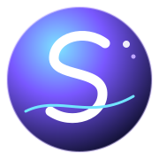
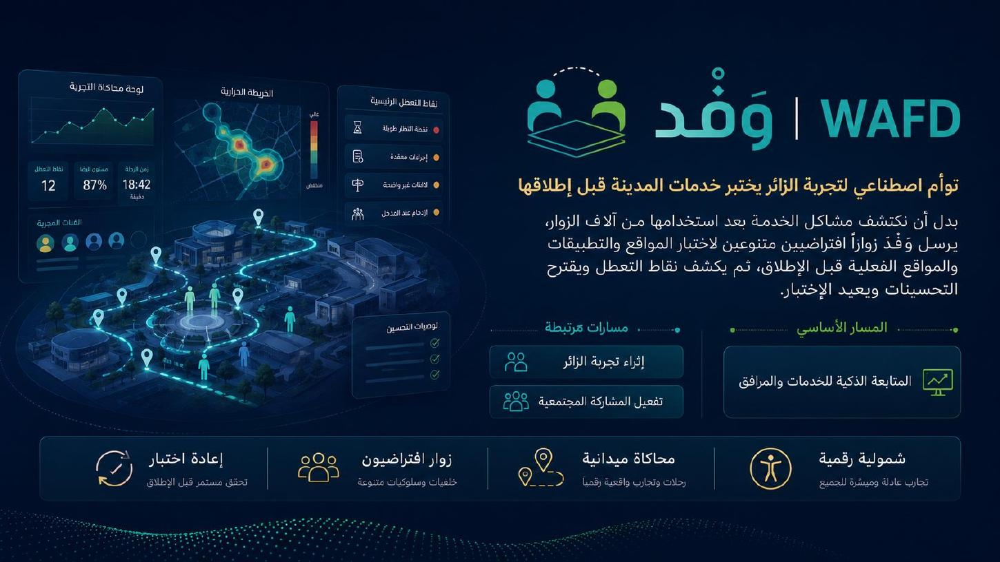
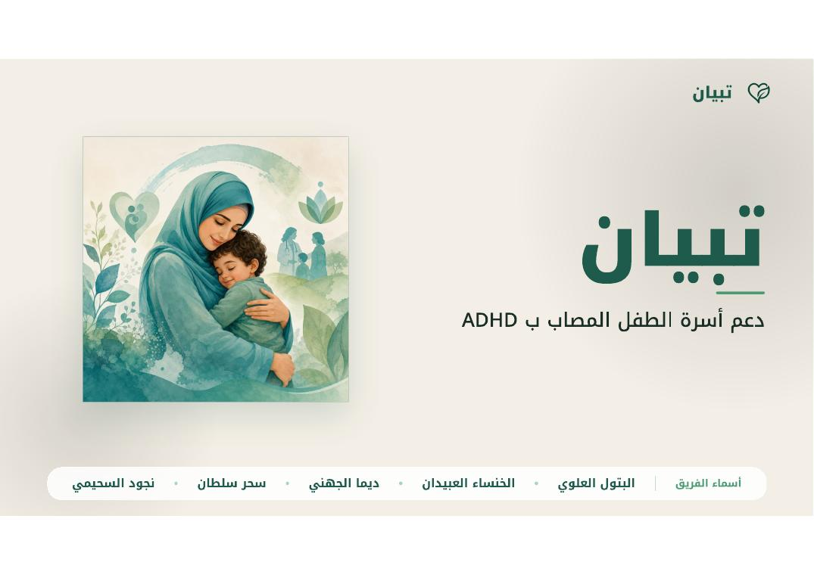
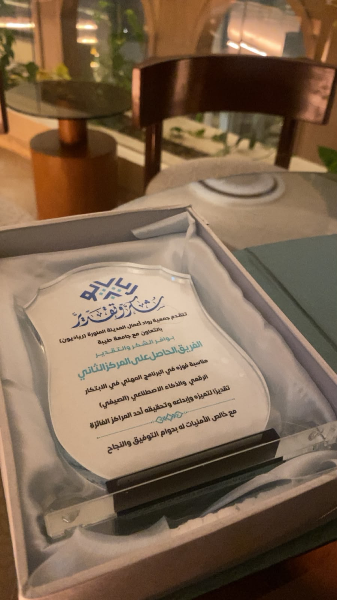
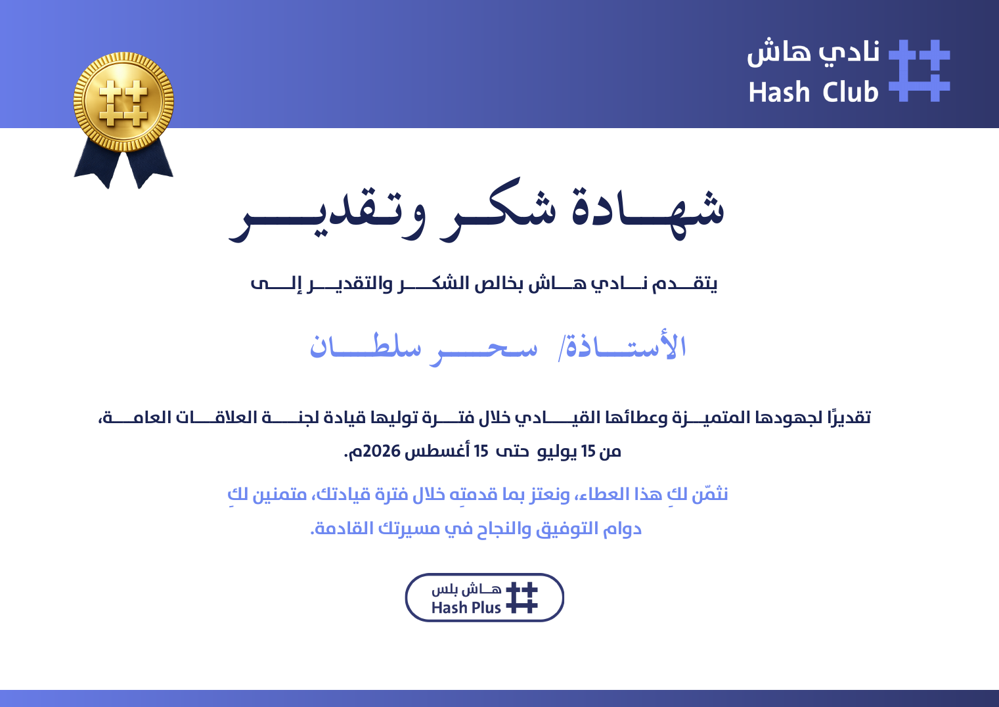

05
Smart Monitoring · 2nd Place
ZEMAM
AI-powered facility management for smart cities using GPS-based task zones, photo verification, dashboards and automated task-status updates.

SAHARInformation Systems · AI · Research
I build and study intelligent digital systems — from AI models and memory agents to web products, IoT and human-centered technology.
Profile
I am an Information Systems graduate from Taibah University. My work moves between AI, research, software development, data and smart systems, with a focus on turning technical ideas into useful products and experiments.
Selected work
A selection of research, AI, accessibility, smart-city and digital-product work.
Graduation Project · Best Project 2026
A smart accessibility platform for elderly safety and independence, connecting AI, IoT, EEG, caregiver monitoring, emergency response and mobile services in one system.
Watch demo ↗AI Research · King Khalid University Fellowship
A controlled benchmark investigating whether repeated counterfactual simulation can make memory-augmented AI agents recall imagined events as if they were real experience.
AI Simulation · Madinah Hackathon 2026
A synthetic twin for visitor experience testing. Virtual visitors with different languages, abilities, connectivity and digital skills simulate service journeys before launch to reveal friction and failure points.
GitHub ↗

Digital Product · 2nd Place
An Arabic platform supporting families of children with ADHD through structured follow-up, educational content, smart assistance, task organization and access to specialists.
More work
Smart Monitoring · 2nd Place
AI-powered facility management for smart cities using GPS-based task zones, photo verification, dashboards and automated task-status updates.
Secure Digital Correspondence
A confidential correspondence concept combining AI, blockchain, encryption and digital signatures to improve privacy, authenticity and traceability.
Experience
Working on Arabic legal speech-to-text and AI model tasks, including dataset preparation, model comparison, testing and evaluation.
Researching memory reliability in AI agents through the MIRAGE-MEM benchmark and controlled experimental design.
Trained around 38 students from different age groups in AI concepts and web fundamentals through practical activities and projects.
Worked across UI/UX, system analysis, Next.js frontend development, Flutter, QA, GitHub workflows, API testing and local integration environments.
Led public relations activities, coordination and communication for the club, supporting organized team delivery and member engagement.
Capabilities
01
Machine learning, AI model work, data analysis and experimentation across applied and research projects.
RAQEEB · MIRAGE-MEM · Basiratk
Proof & moments




Contact
Open to AI, software, research and digital-product opportunities.